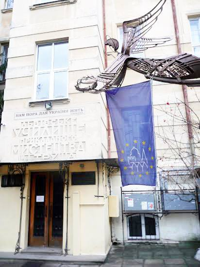

Привіт! Мене звати Варвара Порецька і я студентка 5-курсу Львівського коледжу декоративного та ужиткового мистецтва ім.І.Труша. У вільний час я захоплююсь музикою, живописом та створенням ювелірних виробів.
Я навчаюсь у Львівському коледжі декоративного та ужиткового мистецтва ім. Івана Труша. Моя спеціальність - Ювелірні вироби.
Нижче ви можете побачити деякі з моїх робіт.
Напишіть мені: itlifidyyzifvjo@gmail.com